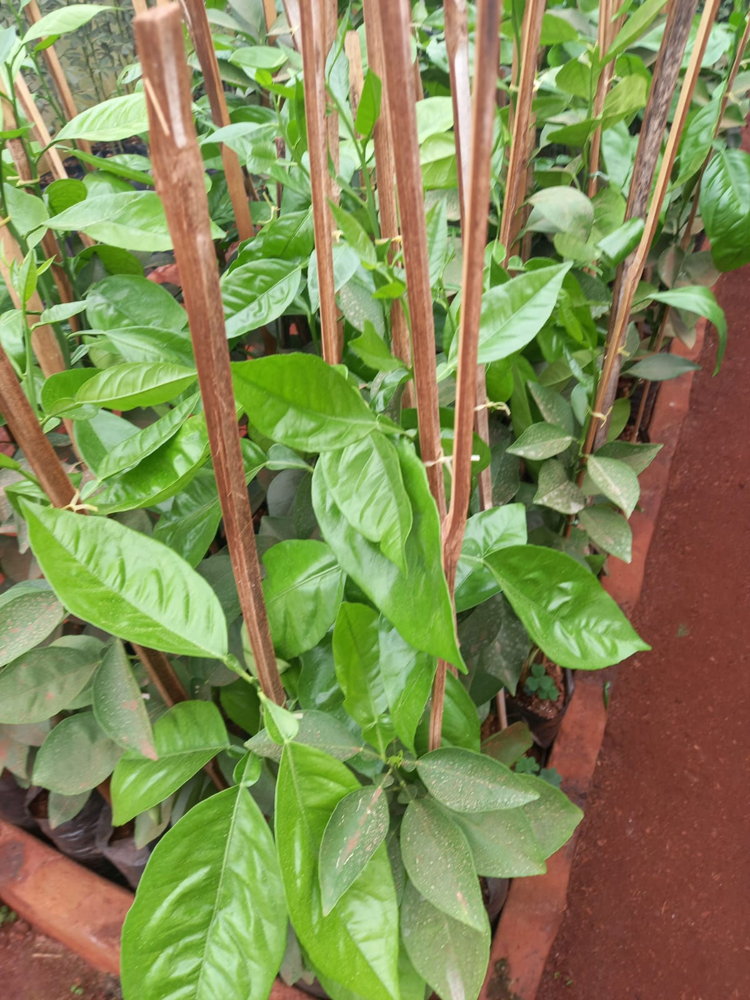
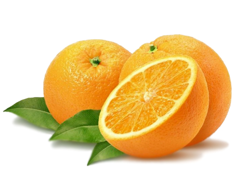
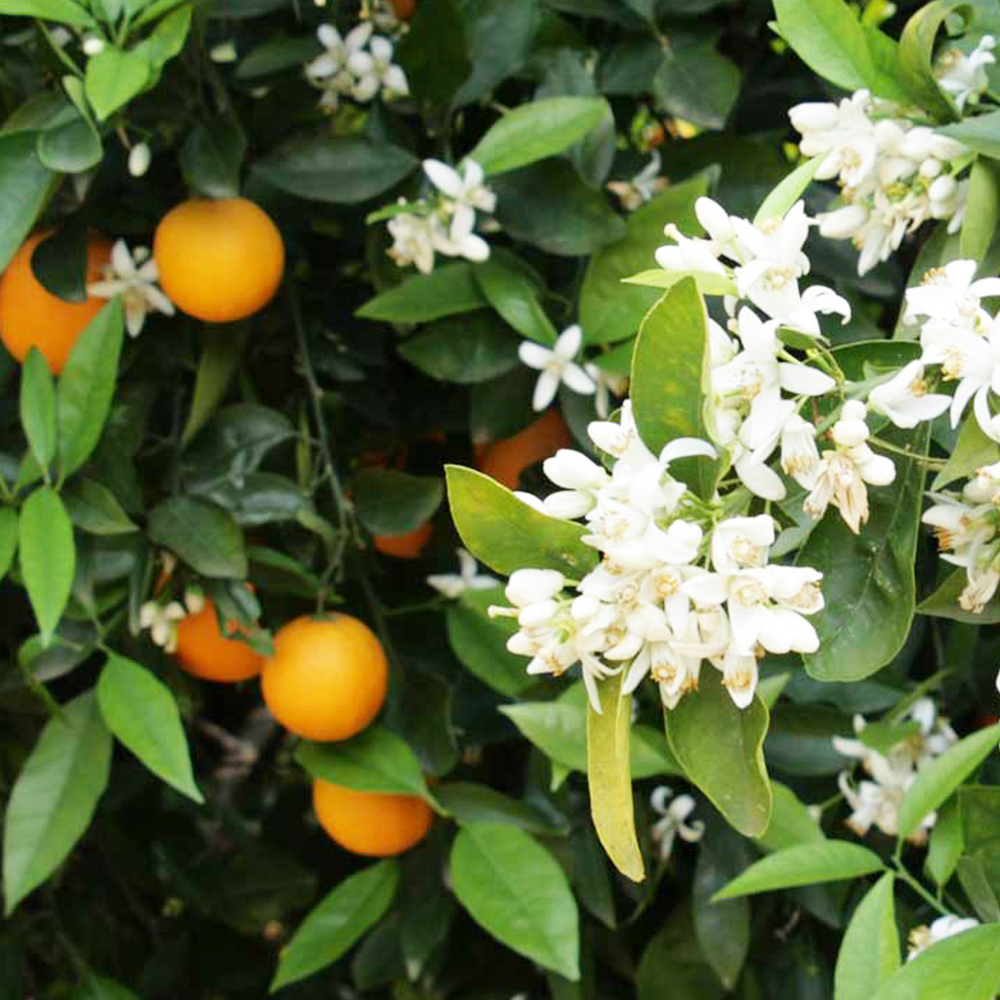

La naranja Newhall es una variedad de naranja de ombligo (Navel) muy popular en el mercado, valorada por su maduración temprana y su excelente calidad de fruto.

Origen y Características Botánicas
Nombre científico: Citrus sinensis new hall
Origen: Mutación de la variedad Washington Navel
Árbol: Vigoroso, de buen desarrollo y forma redondeada. Posee un follaje denso de color verde oscuro y, a diferencia de otras variedades, presenta poca o ninguna espinosidad.
Floración: Flores son sin polen
Tendencia: Puede presentar alternancia de cosechas (producir más frutos un año que el siguiente)

Características del fruto
Tipo: Naranja ombligo
Forma: Redondeada a ligeramente ovalada, con un ombligo poco prominente en la parte inferior.
Tamaño: Medio a grande
Piel: De color naranja intenso, con una superficie de rugosidad fina
Pulpa: Muy jugosa, de textura fina y sin semillas
Sabor: Dulce, con un aroma y sabor intensos
Contenido: Rico en jugo y con un alto contenido de vitamina C, así como otros fitoquímicos como los flavonoides, que tienen efectos antioxidantes

Cultivo y cosecha
Suelo: Prefiere suelos ácidos y fértiles, con buen drenaje. No tolera la salinidad
Riego: Frecuente y moderado, evitando el encharcamiento
Manejo: Requiere cuidados específicos como la poda para mantener la productividad y la protección contra plagas comunes como la mosca blanca, pulgones, cochinillas y ácaros
Clima: Especie subtropical que se adapta bien a climas templados